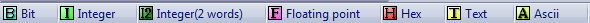
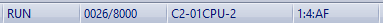
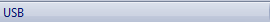
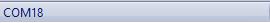
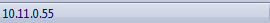

Topic: CL046

| Status Bar |
Topic: CL046
|
The Status Bar is located at the bottom of the CLICK PLC programming application. The Status Bar can be turned on or off from the View Menu (see below).
The left side of the Status Bar provides a handy legend that explains the meaning of the data type symbols.

The center of the Status Bar contains four important pieces of information about the current project:

In addition to the information provided by the center of the Status Bar, the Connection Status/PLC Modes serves as a button to initiate connection or mode changes. Click on the Connection Status/PLC Modes to open the Connect dialog or the PLC Modes dialog.
When connected to a PLC, the right side of the Status Bar displays the Connection Method:
"USB" for a direct connection from the PC to the CLICK CPU (only for CLICK PLUS)

"COMx" for serial connections (both hardware serial and USB serial).

For Ethernet connections the IP Address is displayed.

The Status Bar can be opened or closed using the View Menu.